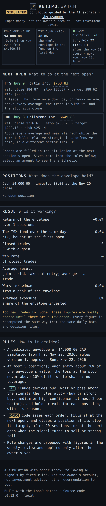
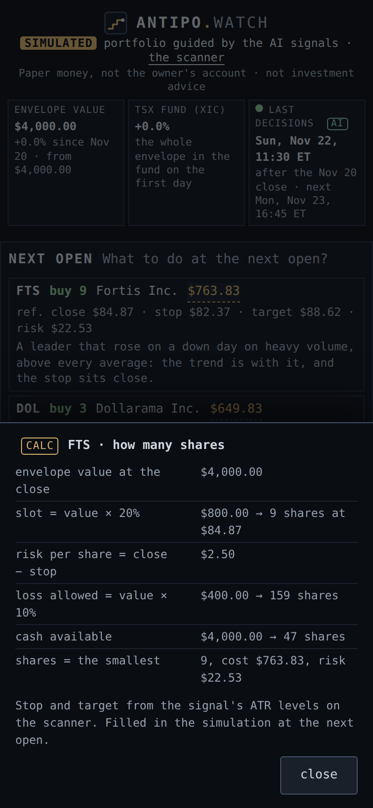
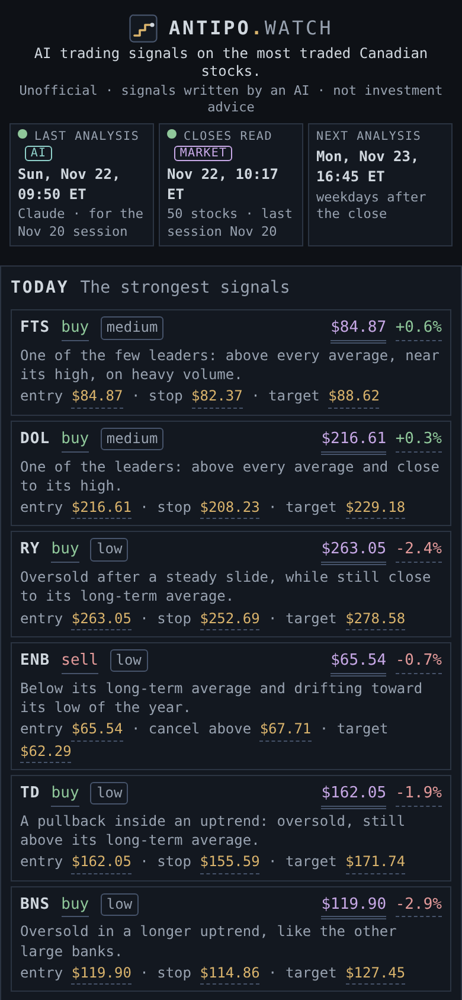

Loop 012 — A guided portfolio, simulated in public
2026-11-22 · A $4,000 envelope that follows the AI signals by fixed rules, sized and filled by code, scored against the TSX; plus the status strip and a denser phone layout. Versions 0.13.0 and 0.14.0.
Why
I want it really AI-analyzed, with repeatable metrics, and I want learning. Give my agent a portfolio of about $4,000: do you wait, do you buy, and if I buy, how many. I want it guided. Then I make the choice to place the orders or not, and I tell you after.
The owner's words, reworded in English. Answers: simulation first; 4 or 5 positions, 10%, a dedicated envelope; no leverage; the repository stays public.
What changed


- Rules, versioned: at most 5 positions, about 20% each, the loss at the stop never above 10% of the envelope, no leverage; entries on buy or strong buy at medium or high confidence, two per sector.
- Claude decides, code computes: buy, wait or pass; hold or exit; reasons without numbers. Sizes, fills at the next open, stops, targets and metrics come from code, the same every time.
- The first decisions: buy 9 FTS and 3 DOL at the Nov 23 open.
- The daily run lives here, in the working session, weekdays about 16:47.
- 0.13.0: the date and time of the last analysis in a status strip; a denser phone layout.

Checks
| Check | Result | Evidence |
|---|---|---|
| Unit tests | passed | 188; sizing, fills and exits by hand. |
| Real-browser tests | passed | 17 local; applicable ones live. |
| The owner saw screenshots before release | passed | "Oui go". |
| First scheduled run, first fills | not run | Monday Nov 23. |